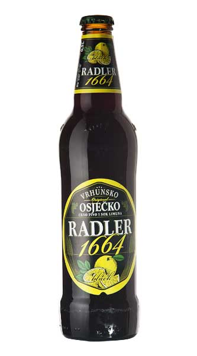

Osijek comes from the Croatian word "oseka" which means "ebb tide".
The origins of human habitation of Osijek dates back to Neolithic times, with the first known inhabitants belonging to the Illyrians and later invading Celtic tribes. After the conquest of Pannonia, Osijek, known at the time as Mursa, was under the administration and protection of the Roman 7th legion which maintained a military castrum at the colony and a bridge over the river Drava. Roman emperor Hadrian raised the old settlement of Mursa to a colony with special privileges in 131.
Read moreAccording to the 1910 census, the city had 31,388 inhabitants. The official Austrian census lists 12,625 as Croats, 11,269 as Germans or Danube Swabians, 3,729 as Hungarians, 2,889 as Serbs and 876 others. According to religion, there were 24,976 Roman Catholics, 2,943 Orthodox, 2,340 Jews, 594 Reformations, 385 Evangelicals, 122 Greek Catholics and 28 others.[25][26] After World War II a large part of the Danube Swabian population were expelled as a revenge for their presumed participation in German occupation of Yugoslavia. Their property has become publicly owned and redistributed to the World War II victims.
Read moreAt the November 2007 elections, no party held a majority, which is not unusual for Croatia as local elections have proportional representation. However, the three mathematically possible coalitions had political problems that made coalition building unusually difficult. The November elections were early (izvanredne) elections caused by the breakdown of the coalition of the two main parties, the Croatian Party of Rights (HSP) and the Croatian Democratic Assembly of Slavonia and Baranja (HDSSB). The cause of the breakdown was disagreement over the building of a new sports stadium.[33][34]
Read moreBlack radler beer is prepared only in Osijek. So, do you need more reasons to taste it when summer days reach the highest temperature?!
